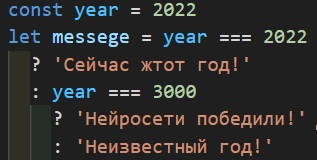

L7. Операторы.
Оператор - это встроенная в JavaScript Функция.
- Операторы быают: арифметические - + - * /
- Сравнения - === !==
<= >=
- Логические - ! (не) && (и) || (или)
- Опертор присваивания - =

- Опертор разделения объекта на свойства - ...
Текстовые операторы
- typeof - С помощью этого оператора можно проверить тип того или иного значения.
- instanceof - С помощью этого оператора можно проверить принадлежность объекта к тому
или иному классу.
- new
- delete - Оператором удаления можно удалить то или иное свойство у объекта.

Операнды - это то, что находится справа или слева от оператора.
Унарные и бинарные операторы
У унарных операторов всегда один операнд (аргумент).
++ + delete typeof new Object
У бинарных операторов два операнда (аргумента).
= + += === &&.
Форматы записи операторов
Инфиксная запись - в таком формате операнд находится между
операндами.

Префиксная запись - в таком формате оператор стоит перед операндом.
При этом у этого оператора имеется возможность постфиксной записи.

Постфиксная запись - в таком формате оператор идет после операнда.
Приоритетность операторов
Полностью знать приоритетность операторов не нужно, достаточно просто посмотреть
на таблицу в случае необходимости.

Логические операторы
-
Оператор отрицания:

-
Двойное отрицание:

-
Опратор &&:
Эти операторы являются операторами короткого замыкания.

В данном примере нет смысла смотреть дальше, если первое выражение ложно, т.к. оператор
&& требует правдивости от обоих операндов.
Если ложно первое выражение, то возвращается его значение, а если же ложно второе выражение, то
вернется его значение.
-
Опертор ||:

С оператором || если первое выражение истинно, то выражение 2 игнорируется и
возвращается результат выражения 1.
Если ложно первое выражение, то оценивается второе. И если второе истинно, то возвращается его
значение.
-
Цепочки операторов && и ||:

Оператор разделения объекта на свойтсва ...

В этом примере мы хотим создать новый объект используя уже существующий как
основу, и добавить новые свойства.
Это можно сделать используя оператор разделения ... .
Если же у существующего объекта уже есть свойтва, котрые необходимо переназначить,
то новое значение свойства необходимо писать после оператора ... .

Так же, при помощи оператора разделения можно объеденять свойтва разных объектов в
новом объекте. Порядок свойств, при создании нового объекта, так же важен!
Условия if и else
Когда необходимо выполнить какие-либо действия в зависимости от условий, необходимо воспользоваться
конструкцией if.
Эта инструкция обрабатывает выражение в круглых скабках и приводит его к булевому значению, и если оно
равно true,
то выполняется код, написаныый в фигурных скобках.
Дальше можно воспользоваться инструкцией else, которая выполнит код, если заданное
выражение равно false.
Ещё можно воспользоваться конструкцией else if, которое позволить добавить ещё одно
условие.
Тернарный оператор "?"
Условный (тернарный) оператор - единственный оператор в JavaScript, принимающий три операнда: условие,
за которым следует знак вопроса ?, затем выражение, которое выполняется, если условие
истинно,
сопровождается двоеточием, и, наконец, выражение, которое выполняется, если условие ложно. Он часто
используется в качестве укороченного варианта условного оператора if.

Оператор нулевого слияния "??"
Оператор нулевого слияния проверяет первый операнд, не равно ли его значение null или
undefiend,
и возвращает его, в противном же случае, он вернет значение правого операнда.
Оператор in
С помощью этого оператора можно проверить наличие какого-либо свойства у объекта:
Так же при помощи цикла for можно перебрать свойства объекта:
Чтобы перебрать значения свойств, нужно использовать квадратные скобки: